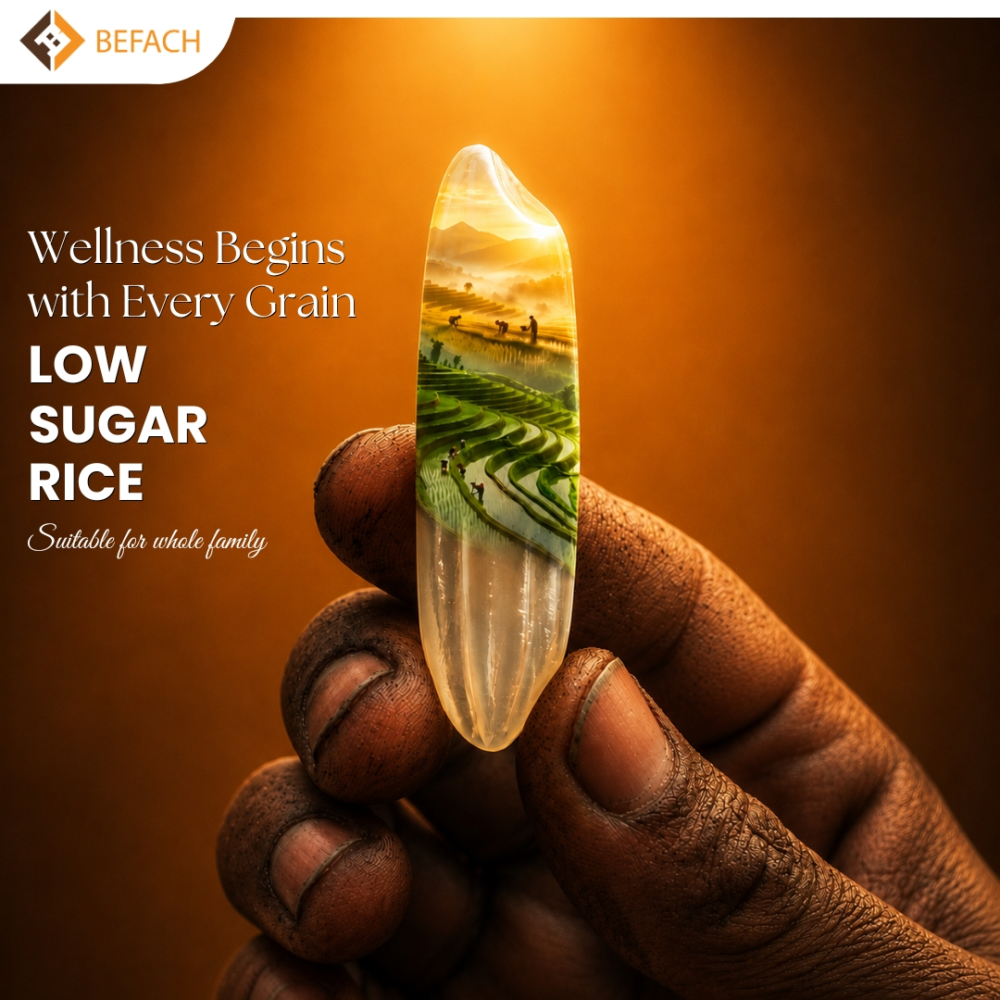
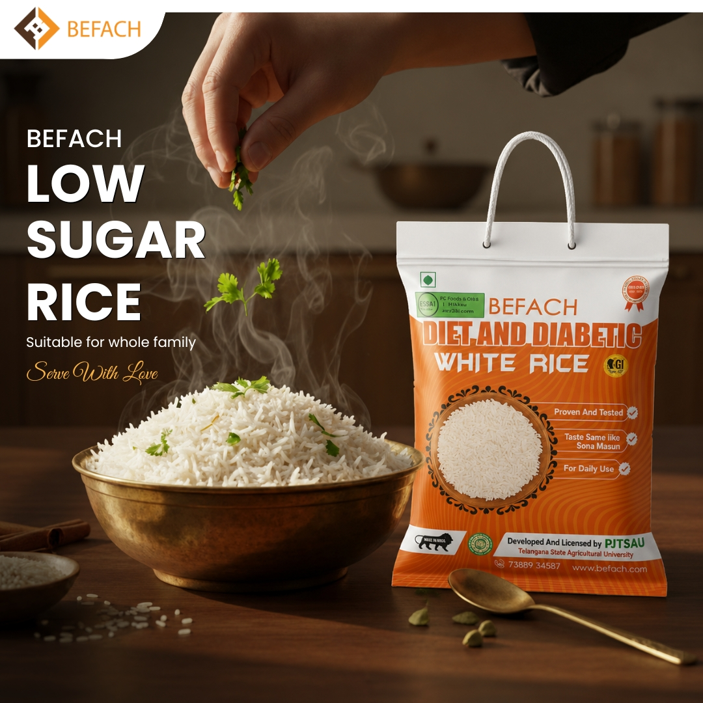
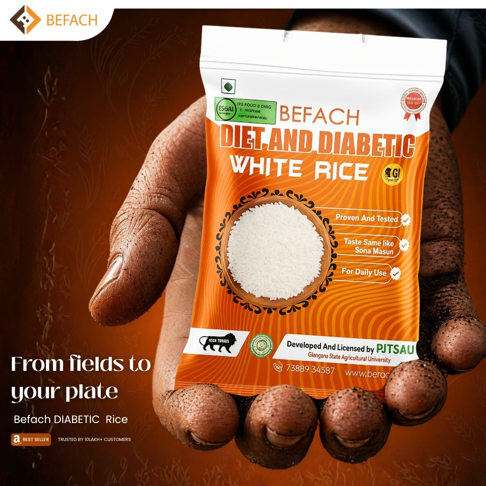

A grain, considered.
Aged Telangana Sona Masoori paddy, processed for a low-glycemic response, served on the plates of 10 lakh+ Indian families. Watch the journey from field to fork.
From the paddy field
Befach Low-GI Rice was developed by agricultural scientists through pedigree breeding of multiple parent lines — Japonica (Japanese variety), Sona Masoori (Andhra), and many other Indian rice varieties. The result: a grain with a favourable nutrient profile and a unique starch arrangement that's associated with slower digestion and a naturally lower glycaemic response.

Engineered, grain by grain
High amylose content (28.33%, Eurofins-tested) gives Befach Rice its slow-release starch profile. Tested at a NABL-accredited lab using ISO 26642:2010 — the lab certified GI = 50, firmly inside the clinically "low" band (≤ 55). Microscopic studies confirm the unique starch arrangement that slows digestion.

Into your kitchen
Same fluffy texture, same comforting rice flavour. Cook 1 cup rice with 1.75 cups water, 15 min on medium heat. Biryani, pulao, jeera rice, idli, dosa — every recipe gets a low-GI upgrade. Most families don't notice the switch.

From fields, to your plate
Delivered pan-India and exported to UAE, Iran, Kuwait, Mauritius, USA, Ireland. Cash on delivery available. 10 lakh+ households have already switched. Your turn.
 UAE
UAE Iran
Iran Kuwait
Kuwait Mauritius
Mauritius USA
USA Ireland
Ireland